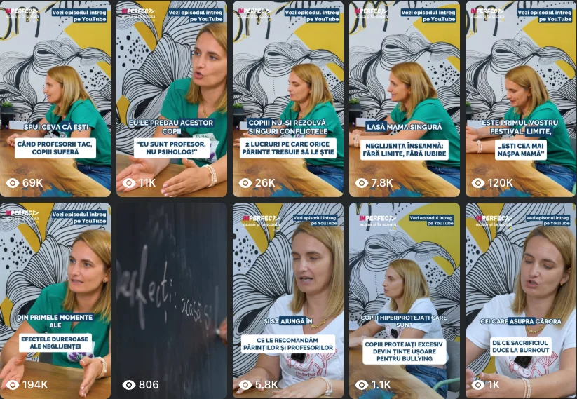

Work
Case studies from my marketing roles: the situation, what I did, and what happened.
Legentic, insurance technology
Building the marketing foundations of an insurtech
Brand guidelines, customer success stories, marketing materials, clearer processes and now a go-to-market strategy.
Read the story
Imperfecți – Acasă și la școală
Growing the Imperfecți podcast on social media
Turned long episodes into short clips that people shared — all organic.
Read the storyTransylvania College
Content and marketing strategy for an international school
One content system across four platforms, built to earn the trust of parents, teachers and students.
Read the storyGood Mom's Circle, Transylvania College
A personal brand and community for Ruxandra Baciu
Content and community for Good Mom's Circle, making the school's director a trusted voice in wellbeing and education.
Read the storyMejix
Email marketing and lead nurturing for B2B clients
Weekly newsletters for 5 B2B clients, with segments and automated flows.
Read the storyGoDaddy
Website copy for 300+ businesses
SEO website and landing page copy, in each brand's own voice.
Read the story